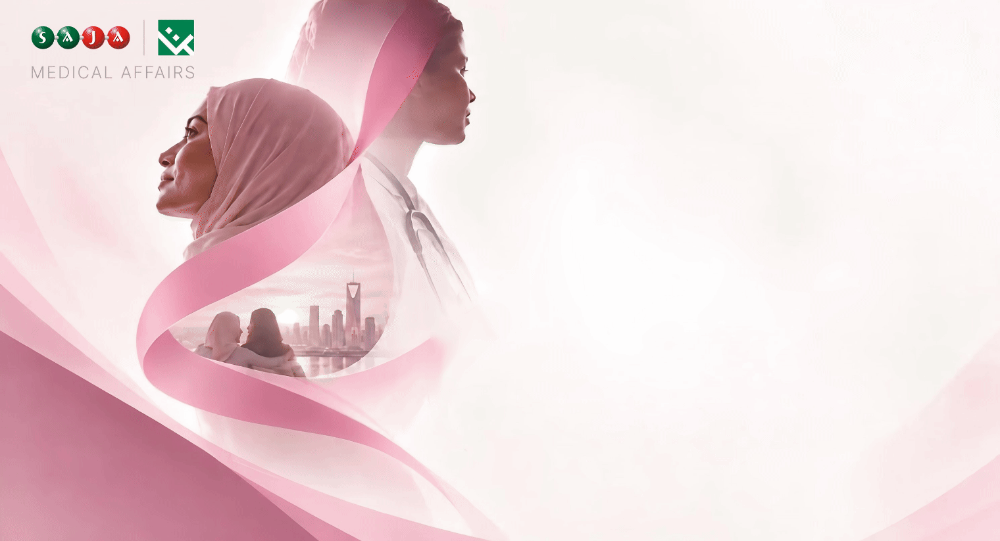

| Dear Colleagues, |
| زملاءنا الأعزاء، |
Breast cancer affects more than the body.
تأثير سرطان الثدي لا يقتصر على الجسد.
Diagnosis, treatment and life after treatment can bring a wide range of emotions. People may experience uncertainty, fear, changes in body image, concerns about side effects or anxiety about the possibility of cancer returning.
فالتشخيص والعلاج والحياة بعد انتهاء العلاج قد ترتبط بمجموعة واسعة من المشاعر؛ مثل القلق، وعدم اليقين، والخوف، والتغيّر في صورة الجسد، والقلق من الآثار الجانبية أو من احتمالية عودة المرض.
This is why listening matters.
ولهذا فإن الإنصات مهم.
If a colleague, friend or family member is going through cancer, support does not always require having the perfect words.
إذا كان أحد زملائنا أو أصدقائنا أو أفراد عائلتنا يمر بتجربة السرطان، فلا يتطلب تقديم الدعم دائمًا العثور على الكلمات المثالية.
Listen without trying to immediately fix the situation. Ask what would be helpful. Respect privacy and personal choices. And remember that practical support can sometimes mean as much as words.
استمع دون محاولة تقديم حلول فورية. اسأل الشخص عمّا يحتاجه. احترم خصوصيته وخياراته. وتذكّر أن المساعدة العملية قد تكون أحيانًا بنفس أهمية الكلمات.
| Listen to the person, not only the diagnosis. |
| استمع إلى الإنسان، وليس إلى التشخيص فقط. |
|
|
|
 | References | المراجع
|
|  |